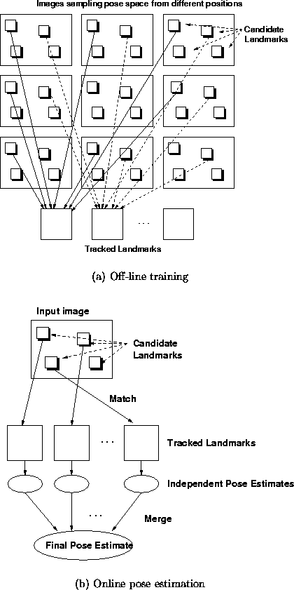

Our approach to the problem at hand uses visual features, referred to as landmarks, to perform position estimation, extracting these landmarks from a preliminary traversal of the environment (i.e. an off-line mapping and pre-computation phase). In this work, landmarks are image-domain features, as opposed to interpreted characteristics of the scene. Candidate landmark selection is based on a local distinctiveness criterion; this is later validated by verifying the appearance of the candidate landmarks against a set of landmark templates. The method consists of an off-line ``mapping'' phase and on-line ``localisation'' phase. The off-line phase is performed once, upon initial exploration of the environment, and consists of learning a set of tracked landmarks considered useful for position estimation. The on-line phase is performed as often as a position estimate is required, and consists of matching candidate landmarks in the input image to the learned tracked landmarks, followed by position estimation using an appearance-based linear combination of views. An outline of the method is as follows.
Figure 1.1 depicts the method pictorially. Figure 1.1(a) provides an outline for the off-line procedure from image acquisition, to tracking candidate landmarks. Figure 1.1(b) depicts the online procedure, from image acquisition, candidate landmark extraction, matching, obtaining independent position estimates and finally to merging.

Figure 1.1: An overview of the method.
In practice we use a statistical measure of local image content for candidate landmark extraction. Good candidates for a statistical measure include saliency measures such as edge density, or local symmetry, or the output of a matched filter. Such a measure has strong local structure in the sense that the output tends to vary smoothly under local changes in camera pose. The objective of this definition is to produce observed landmarks which are reasonably stable and repeatable image features, distinctive in appearance and containing a rich body of information concerning the structure of the image as a whole.
With a suitable measuring function, we can efficiently obtain a large number of stable, distinctive and generic candidate landmarks from most environments. The only requirement on the environment is that it is rich enough in terms of its response to the measuring function. This requirement is reasonable in the sense that image-based localisation will always require that the environment have some visual structure.